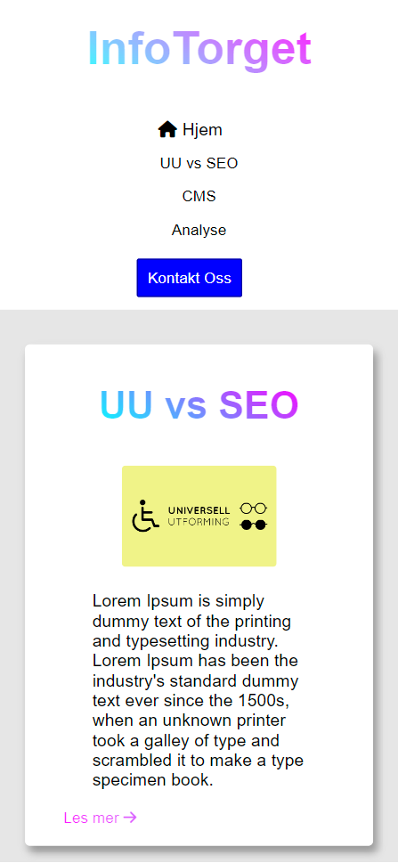
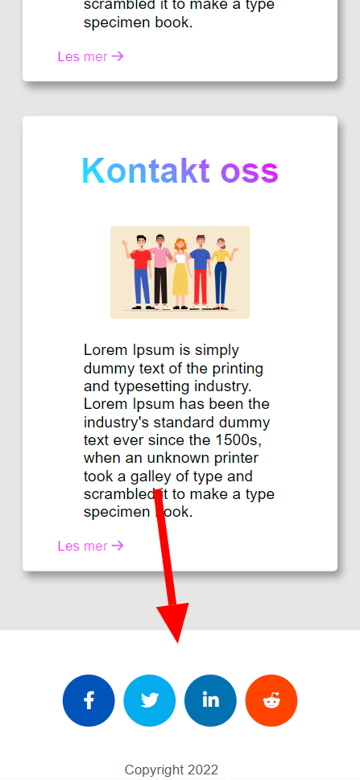

Analyse

Del 1: SEO
Som nenvnt i artikkelen om SEO (uu og seo) er bruk av semantiske tagger veldig viktig. På nettstedet mitt har jeg til nå brukt for det meste brukt slike tagger. For å nevne noen så har jeg brukt: Meta-title, header, nav, h-tagger, main, article, span, ul, li, a og footer. Disse taggene hjelper nettleseren i å forstå hva innholdet er. Til tross for en god del bruk av disse taggene, er det fortsatt en del forbedringspotensiale. I meta dataen er det flere tagger som ikke er brukt, men som kan brukes og vil bidra til en bedre SEO. Description, Keywords, favicon og author er de viktigste meta-taggene jeg har lagt til nå som vil hjelpe med SEO. Et annet sted jeg kan forbedre min SEO er i bruken av div tagger. Disse er uspesifikke tagger, som ikke gir nettleseren noe god informasjon om hva innholdet faktisk er. Her har jeg i ettertid forsøkt å bruke mer sections, p og span tagger. En annen ting som kan effekte SEO-en negativt er om siden er treg. En ting som ofte kan bidra til en treg nettside er ukomprimerte bilder. Her har jeg valgt å ikke komprimere noen ting siden bildene var ganske komprimerte fra før og utgjorde ikke noe mer enn 100kb. Det siste jeg har jobbet med, og som kanskje er det viktigste er å forbedre responsiviteten, slik at siden er tilgjengelig for mobil og nettbrett. Her har jeg for eksempel utvidet det horizontalet området teksten opptar, endret litt på nav-baren, tatt vekk delingsknappen og byttet om til en footer med delingsknapper. Utifra hvilken skjermstørrelse som blir brukt har jeg gjort visse endringer og sammenspleisinger av mobil og desktop layout.
Mobil
Nav
Footer
Nav
Footer
Del 2: Universell utforming
En del av det man gjør for å forbedre SEO er også aktuelt når det kommer til UU. Så et par av
problemene på siden var allerede gjort. Kanskje det er allikevel en del jeg kunne ta tak i. Etter nå å ha kjørt siden min gjennom ulike verktøy
har jeg oppdaga noen steder med forbedringspotensiale.
Det første jeg tok tak i var å legge ved mer beskrivene alt tagger, og sørget for at knapper, blant annet sosiale medier linker, mørkt/lyst tema og deleknappen hadde en
alt tekst, slik at det kan betjenes av blinde. På den versjonen av siden med mørkt tema har jeg måttet gjøre et par endringer med kontrastene.
Overskriftene, noen knapper og lenker
hadde en ratio som var mindre en AA standaren som er på 4.5. Som følge har jeg nå endret alle disse til å være innenfor.
Jeg har også testet med lighthouse på sidene mine, der fikk jeg rundt 90 på de fleste. Det var noen sider der jeg hadde litt mindre, rundt 86.
Lighthouse klagde blant annet på at noen av linkene ikke var navngitt, og det har jeg nå endret.